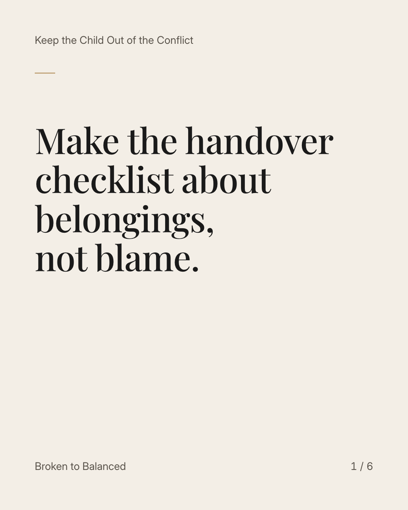
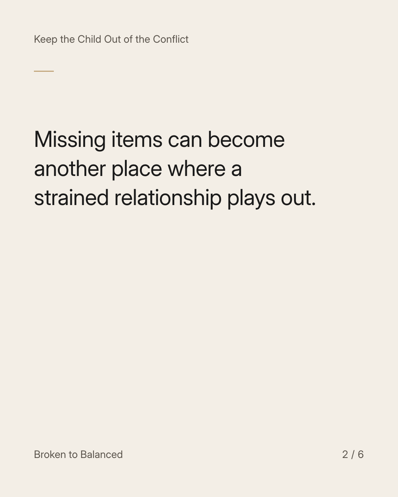
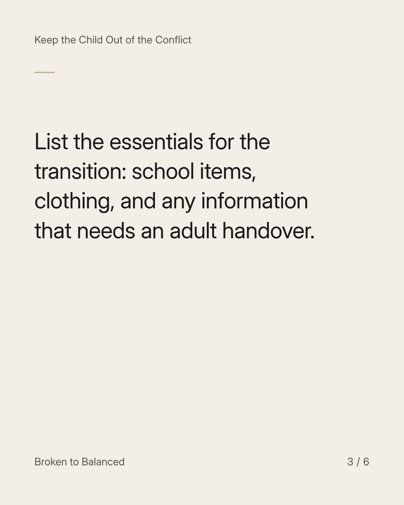
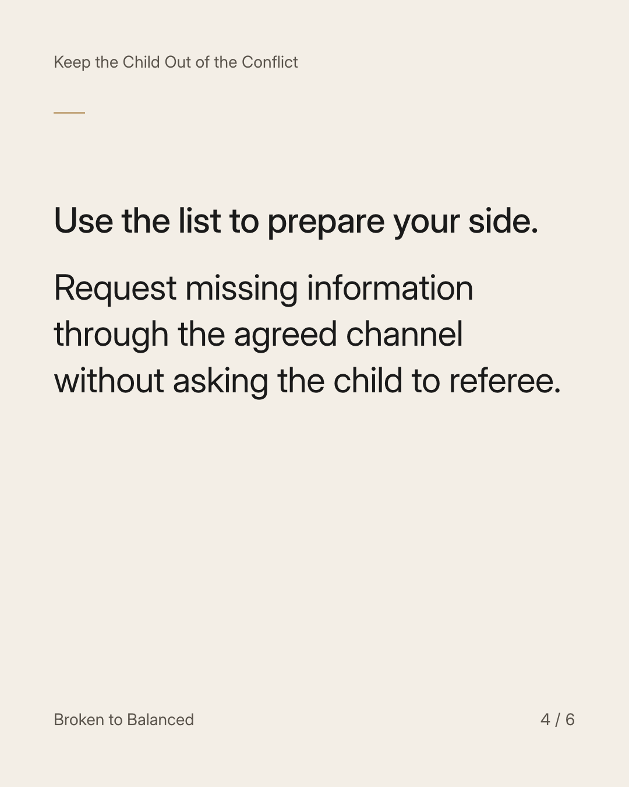
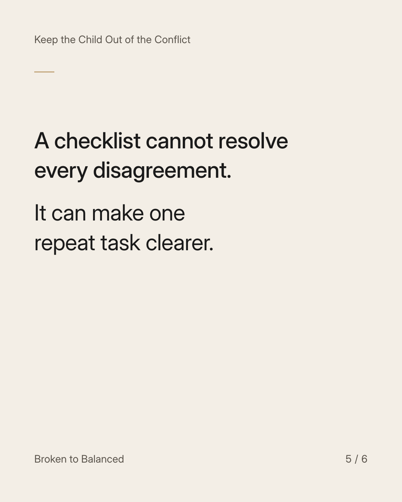
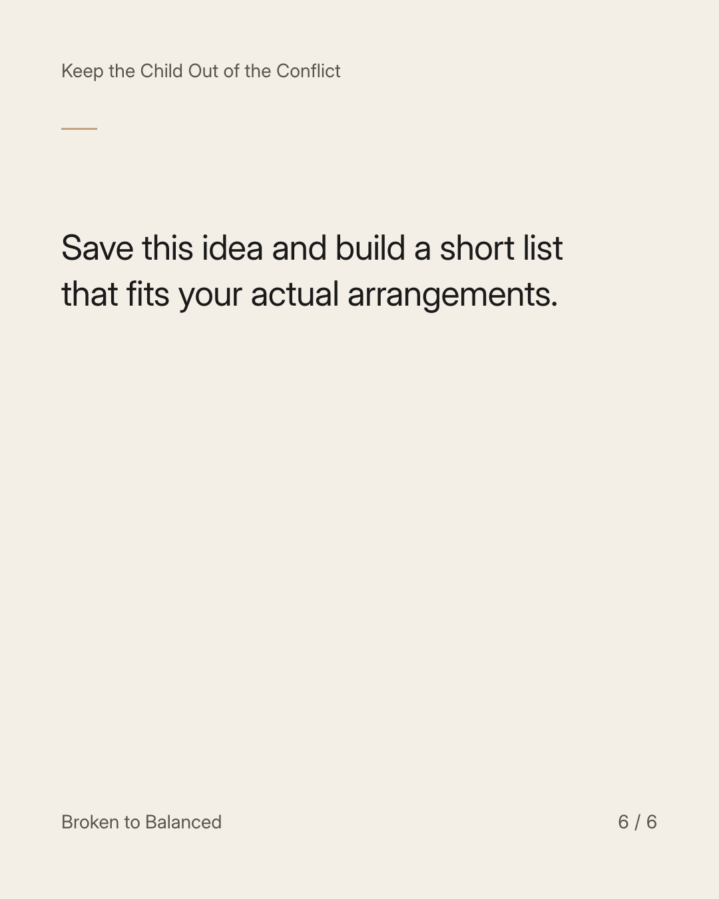

Exact text and accessibility text
Make the handover checklist about belongings, not blame.
Slide 1 of 6. Make the handover checklist about belongings, not blame.


Exact text and accessibility text
Missing items can become another place where a strained relationship plays out.
Slide 2 of 6. Missing items can become another place where a strained relationship plays out.


Exact text and accessibility text
List the essentials for the transition: school items, clothing, and any information that needs an adult handover.
Slide 3 of 6. List the essentials for the transition: school items, clothing, and any information that needs an adult handover.


Exact text and accessibility text
Use the list to prepare your side. Request missing information through the agreed channel without asking the child to referee.
Slide 4 of 6. Use the list to prepare your side. Request missing information through the agreed channel without asking the child to referee.


Exact text and accessibility text
A checklist cannot resolve every disagreement. It can make one repeat task clearer.
Slide 5 of 6. A checklist cannot resolve every disagreement. It can make one repeat task clearer.


Exact text and accessibility text
Save this idea and build a short list that fits your actual arrangements.
Slide 6 of 6. Save this idea and build a short list that fits your actual arrangements.
Exact caption
Plain-text fallback: select and copy the caption.